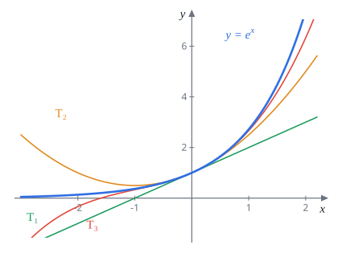
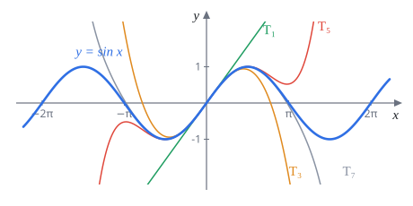
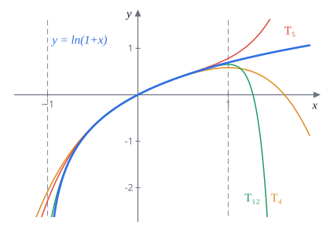
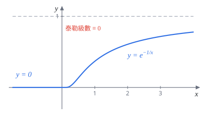

Week 16-2 泰勒級數
AP Calculus I（115 學年）Lecture Note 16-2 教學與題解
講義筆誤p.147 練習 (a) 的答案 $1-x^2+\frac{x^4}{2!}-\frac{x^6}{3!}+\cdots$ 是 $e^{-x^2}$ 的展開；$\cos(x^2)$ 應為 $1-\dfrac{x^4}{2!}+\dfrac{x^8}{4!}-\cdots$。見題 8。
講義筆誤p.151 求 $\sum i^3$ 的例題：應令 $f(x)=x^3$（講義誤抄成 $x^2+x$），$G(x)$ 的最後一項應為 $+\frac{x^2}4$，不是 $\frac{x^2}2$；最後一行的答案是對的，化簡為 $\frac{n^2(n+1)^2}4$。見題 17。
講義筆誤p.154 反例 (b) 與證明末段寫成 $R_n(x)=f(x)$、「the Taylor series of $f$」，這題的函數是 $g$。見題 23。
這份講義的標題是 Lecture Note 16-2，內頁寫 Week 17，小節編號沿用講義的 17.x。整份講義都是 (*) 延伸內容。
到目前為止你只會「一階近似」：在 $x=a$ 附近用切線 $f(a)+f'(a)(x-a)$ 代替 $f(x)$。切線只抓到函數值和斜率，離 $a$ 一遠就不準。這週的想法很直接：既然一次多項式抓斜率，那二次多項式可以再抓彎曲程度，三次再多抓一點……一路加下去，加到無窮多項，能不能剛好等於原函數？這就是泰勒級數。
17.1 從線性近似到泰勒級數延伸
假設 $f$ 可以寫成 $(x-a)$ 的「無窮次多項式」（冪級數）：
$$f(x)=c_0+c_1(x-a)+c_2(x-a)^2+c_3(x-a)^3+\cdots=\sum_{k=0}^\infty c_k(x-a)^k.$$係數怎麼找？和比較多項式係數的手法一樣，代 $x=a$ 讓後面全部消失：
- 代 $x=a$：$f(a)=c_0$。
- 微分一次 $f'(x)=c_1+2c_2(x-a)+3c_3(x-a)^2+\cdots$，代 $x=a$：$f'(a)=c_1$。
- 再微分 $f''(x)=2c_2+3\cdot2\,c_3(x-a)+\cdots$，代 $x=a$：$f''(a)=2c_2$。
- 微分 $k$ 次，$(x-a)^k$ 這項變成常數 $k!\,c_k$，更高次的項還留著 $(x-a)$，代 $x=a$ 後只剩 $f^{(k)}(a)=k!\,c_k$。
定理 17.1.1（Taylor）若 $f(x)=\sum_{k=0}^\infty c_k(x-a)^k$，則
$$c_k=\frac{f^{(k)}(a)}{k!}.$$定義 17.1.1級數 $\displaystyle\sum_{k=0}^\infty\frac{f^{(k)}(a)}{k!}(x-a)^k$ 稱為 $f$ 在 $x=a$ 的泰勒級數。取前 $n+1$ 項（到 $(x-a)^n$）得到的 $n$ 次多項式叫 $n$ 階泰勒多項式，記為 $T_n(x)$。$a=0$ 時也叫 Maclaurin 級數。
$T_1(x)=f(a)+f'(a)(x-a)$ 就是線性近似。下圖是 $e^x$ 在 $x=0$ 的 $T_1,T_2,T_3$：階數越高，在 $0$ 附近貼得越久。

題 1求 $f(x)=2x^3-5x^2+6x+3$ 在 $x=1$ 的泰勒級數。（提示：方法一代公式，方法二連續綜合除法）
方法一：代公式。多項式微分到第四次就是 $0$，所以級數只有四項。
$$\begin{aligned} f(1)&=2-5+6+3=6\\ f'(x)&=6x^2-10x+6,&f'(1)&=2\\ f''(x)&=12x-10,&f''(1)&=2,&\tfrac{f''(1)}{2!}&=1\\ f'''(x)&=12,&&&\tfrac{f'''(1)}{3!}&=2 \end{aligned}$$方法二：連續綜合除法。要把 $f$ 寫成 $c_0+c_1(x-1)+c_2(x-1)^2+c_3(x-1)^3$。用 $(x-1)$ 除 $f$，餘數就是 $c_0$；商再除一次 $(x-1)$，餘數是 $c_1$；以此類推。
$$\begin{array}{r|rrrr} 1&2&-5&6&3\\ &&2&-3&3\\\hline &2&-3&3&\boxed{6}\\ &&2&-1\\\hline &2&-1&\boxed{2}\\ &&2\\\hline &2&\boxed{1} \end{array}$$最後剩下的 $2$ 和三個框起來的餘數，由下往上讀：$c_3=2$、$c_2=1$、$c_1=2$、$c_0=6$。兩種方法相同。
$f(x)=6+2(x-1)+(x-1)^2+2(x-1)^3$
本節練習
練習 17.1-1求 $f(x)=x^3-3x+1$ 在 $x=2$ 的泰勒級數。
詳解
$f(2)=8-6+1=3$；$f'(x)=3x^2-3$，$f'(2)=9$；$f''(x)=6x$，$\frac{f''(2)}{2!}=6$；$f'''=6$，$\frac{6}{3!}=1$。
用綜合除法驗算：係數 $1,0,-3,1$ 連除 $(x-2)$，餘數依序是 $3,9,6$，最後剩 $1$。
$3+9(x-2)+6(x-2)^2+(x-2)^3$
練習 17.1-2求 $f(x)=\ln x$ 在 $x=1$ 的泰勒級數（寫出一般項）。
詳解
$f'(x)=x^{-1}$，$f''(x)=-x^{-2}$，$f'''(x)=2x^{-3}$，$f^{(4)}(x)=-3!\,x^{-4}$。規律是 $f^{(k)}(x)=(-1)^{k-1}(k-1)!\,x^{-k}$，所以
$$c_k=\frac{f^{(k)}(1)}{k!}=\frac{(-1)^{k-1}(k-1)!}{k!}=\frac{(-1)^{k-1}}k\quad(k\ge1),\qquad c_0=\ln1=0.$$令 $x-1=t$ 就是下一節的 $\ln(1+t)$ 展開。
$\displaystyle\sum_{k=1}^\infty\frac{(-1)^{k-1}}k(x-1)^k=(x-1)-\frac{(x-1)^2}2+\frac{(x-1)^3}3-\cdots$
練習 17.1-3已知 $f(x)=\displaystyle\sum_{k=0}^\infty\frac{k+1}{2^k}(x-1)^k$，求 $f''(1)$ 與 $f^{(5)}(1)$。
詳解
反過來用定理 17.1.1：$f^{(k)}(1)=k!\,c_k$。
$$f''(1)=2!\cdot\frac{3}{4}=\frac32,\qquad f^{(5)}(1)=5!\cdot\frac{6}{32}=\frac{720}{32}=\frac{45}2.$$$f''(1)=\dfrac32$，$f^{(5)}(1)=\dfrac{45}2$
17.2 常用函數的泰勒級數延伸
定理 17.2.1以下都是在 $x=0$ 的展開。
對所有實數 $x$ 成立（收斂半徑 $R=\infty$）：
$$e^x=1+x+\frac{x^2}{2!}+\frac{x^3}{3!}+\cdots,\quad \sin x=x-\frac{x^3}{3!}+\frac{x^5}{5!}-\cdots,\quad \cos x=1-\frac{x^2}{2!}+\frac{x^4}{4!}-\cdots$$對 $-1\lt x\lt 1$ 成立（$R=1$，端點 $x=\pm1$ 要個別判斷）：
$$\frac1{1-x}=1+x+x^2+\cdots,\quad \ln(1+x)=x-\frac{x^2}2+\frac{x^3}3-\cdots,\quad \tan^{-1}x=x-\frac{x^3}3+\frac{x^5}5-\cdots$$這六條要背。記法：$e^x$ 每項都有、係數 $\frac1{k!}$；$\sin$ 只有奇次、$\cos$ 只有偶次，正負交錯；$\frac1{1-x}$ 是等比級數；$\ln(1+x)$ 和 $\tan^{-1}x$ 的分母是次方本身（不是階乘），$\tan^{-1}$ 只留奇次。
$\sin x$ 用 $f^{(k)}(0)$ 依序是 $0,1,0,-1$ 循環就算得出來，$\cos$、$e^x$ 也一樣。$R=\infty$ 的意思是：項數夠多，任何 $x$ 都能逼近。

$R=1$ 的就不同了。$\ln(1+x)$ 在 $x\le-1$ 根本沒定義，級數在 $|x|\gt1$ 也不收斂，項數加越多反而甩得越兇：

泰勒級數可以推廣到複數 $f:\mathbb C\to\mathbb C$，公式完全一樣。題 9(c) 會用到。
17.2.1 端點：交錯級數審斂法
$R=1$ 的三條在 $x=\pm1$ 會不會成立？需要下面這個判別法。
定理 17.2.2（交錯級數審斂法）若 $a_k\gt0$、嚴格遞減且 $a_k\to0$，則 $a_1-a_2+a_3-a_4+\cdots$ 收斂。
直覺：部分和一下加 $a_1$、一下減 $a_2$，每次擺盪的幅度越來越小，最後被夾在一個數上。還有一個附帶好處：停在某項時，誤差不超過下一項的大小，題 7 估積分會用。
題 2證明 $\ln(1+x)=x-\frac{x^2}2+\frac{x^3}3-\frac{x^4}4+\cdots$ 對所有 $x\in(-1,1]$ 成立。
由定理 17.2.1，$(-1,1)$ 內成立，只要看兩個端點。
$x=1$：級數是 $1-\frac12+\frac13-\frac14+\cdots$，$a_k=\frac1k$ 正、嚴格遞減、趨近 $0$，交錯級數審斂法說它收斂。
$x=-1$：級數是 $-\left(1+\frac12+\frac13+\frac14+\cdots\right)$。把括號內從 $\frac13$ 起分組，第 $m$ 組有 $2^{m-1}$ 項、每項至少 $\frac1{2^{m+1}}$：
$$1+\frac12+\underbrace{\left(\tfrac13+\tfrac14\right)}_{\ge\frac14+\frac14=\frac12}+\underbrace{\left(\tfrac15+\cdots+\tfrac18\right)}_{\ge4\cdot\frac18=\frac12}+\underbrace{\left(\tfrac19+\cdots+\tfrac1{16}\right)}_{\ge8\cdot\frac1{16}=\frac12}+\cdots\ge1+\frac12+\frac12+\frac12+\cdots=\infty.$$所以 $x=-1$ 時級數是 $-\infty$，發散（左邊的 $\ln0$ 也沒定義）。
代 $x=1$ 得到一個漂亮的副產品：$\ln2=1-\frac12+\frac13-\frac14+\cdots$。
成立範圍 $(-1,1]$
嚴格來說，交錯級數審斂法只保證 $x=1$ 時級數收斂，沒說收斂到 $\ln2$。補上這步要用 Abel 定理：冪級數在端點收斂，則它的和等於函數在該端點的（單邊）極限。講義略過這點，考試不會要求。
題 3證明 $\tan^{-1}x=x-\frac{x^3}3+\frac{x^5}5-\cdots$ 對所有 $x\in[-1,1]$ 成立。
$(-1,1)$ 內由定理 17.2.1 成立。
$x=1$：級數是 $1-\frac13+\frac15-\frac17+\cdots$，$a_k=\frac1{2k-1}$ 正、嚴格遞減、趨近 $0$，收斂。
$x=-1$：每項都是奇次方，$(-1)^{2k+1}=-1$，級數等於 $-\left(1-\frac13+\frac15-\cdots\right)$，同樣收斂。
和題 2 不同，這裡兩端都收斂，因為分母只有奇數、符號在兩端都保持交錯。
成立範圍 $[-1,1]$
17.2.2 逐項微分與逐項積分
定理 17.2.3若 $f(x)=\sum_{k=0}^\infty c_kx^k$ 的收斂半徑 $R\gt0$，則在 $(-R,R)$ 上 $f$ 可微，而且可以一項一項微分、積分：
$$f'(x)=\sum_{k=1}^\infty kc_kx^{k-1},\qquad\int f(x)\,dx=C+\sum_{k=0}^\infty c_k\frac{x^{k+1}}{k+1}.$$冪級數在收斂範圍內可以當成多項式操作：逐項微分、逐項積分、代換 $x\to x^2$ 或 $x\to-x$、兩個級數相乘。下面四題是四種典型用途。
題 4（求無窮級數的和）
(a) 當 $|x|\lt1$，把 $\dfrac1{1+x^2}$ 寫成 $x=0$ 的泰勒級數。
(b) 由此寫出 $\tan^{-1}x$ 在 $x=0$ 的泰勒級數。
(c) 求 $1-\frac13+\frac15-\frac17+\cdots$。
(a) 等比級數 $\frac1{1-u}=1+u+u^2+\cdots$ 代 $u=-x^2$（$|x|\lt1$ 時 $|u|\lt1$）：
$$\frac1{1+x^2}=1-x^2+x^4-x^6+\cdots=\sum_{k=0}^\infty(-1)^kx^{2k}.$$(b) $(\tan^{-1}x)'=\frac1{1+x^2}$，逐項積分，常數由 $\tan^{-1}0=0$ 得 $C=0$：
$$\tan^{-1}x=x-\frac{x^3}3+\frac{x^5}5-\cdots=\sum_{k=0}^\infty\frac{(-1)^kx^{2k+1}}{2k+1}.$$(c) 題 3 說 $x=1$ 時等式也成立，代入：$\tan^{-1}1=1-\frac13+\frac15-\cdots$。
(c) $\dfrac\pi4$
題 5（快速求高階導數）$f(x)=\tan^{-1}x$，求 $f^{(7)}(0)$ 與 $f^{(8)}(0)$。
直接微 7 次會很痛苦。改用定理 17.1.1 反過來讀：$f^{(k)}(0)=k!\times(x^k\text{ 的係數})$。
由題 4，$x^7$ 的係數是 $-\frac17$，$x^8$ 不出現（係數 $0$）：
$$f^{(7)}(0)=7!\cdot\left(-\frac17\right)=-6!=-720,\qquad f^{(8)}(0)=0.$$$f^{(7)}(0)=-720$，$f^{(8)}(0)=0$
題 6（求極限）求 $\displaystyle\lim_{x\to0}\frac{x\sin x}{1-\cos x}$。
上下都展開到最低次的非零項：
$$x\sin x=x^2-\frac{x^4}6+\cdots,\qquad1-\cos x=\frac{x^2}2-\frac{x^4}{24}+\cdots$$上下同除 $x^2$：
$$\frac{1-\frac{x^2}6+\cdots}{\frac12-\frac{x^2}{24}+\cdots}\to\frac{1}{\frac12}=2.$$$2$
解題套路$\frac00$ 型極限：分子分母各展開到「第一個不為零的項」，比較最低次。最低次相同，極限是係數比；分子次數高，極限 $0$；分母次數高，極限不存在或無窮。比羅必達微好幾次快很多。
題 7（估計積分）估計 $\displaystyle\int_0^1\sin(x^2)\,dx$。
$\sin(x^2)$ 沒有初等反導函數，但級數可以逐項積。$\sin u$ 的展開代 $u=x^2$：
$$\sin(x^2)=x^2-\frac{x^6}{3!}+\frac{x^{10}}{5!}-\frac{x^{14}}{7!}+\cdots$$ $$\int_0^1\sin(x^2)\,dx=\frac13-\frac1{7\cdot3!}+\frac1{11\cdot5!}-\frac1{15\cdot7!}+\cdots=\frac13-\frac1{42}+\frac1{1320}-\frac1{75600}+\cdots$$這是交錯、遞減到 $0$ 的級數，取前三項的誤差小於第四項 $\frac1{75600}\approx1.3\times10^{-5}$：
$$\frac13-\frac1{42}+\frac1{1320}\approx0.31028.$$$\approx0.3103$（真值 $0.310268\ldots$）
題 8求下列函數在 $x=0$ 的泰勒級數（泰勒展開式不一定有一般項公式）。
(a) $\cos(x^2)$ (b) $e^x\sin x$（提示：兩個展開式相乘用分配律） (c) $\tan x$ (d) $\ln\dfrac{1+x}{1-x}$
(a) $\cos u$ 的展開代 $u=x^2$，次方全部變兩倍：
$$\cos(x^2)=1-\frac{x^4}{2!}+\frac{x^8}{4!}-\frac{x^{12}}{6!}+\cdots=\sum_{k=0}^\infty\frac{(-1)^kx^{4k}}{(2k)!}.$$講義答案 $1-x^2+\frac{x^4}{2!}-\cdots$ 是把 $u=-x^2$ 代進 $e^u$，即 $e^{-x^2}$，見頁首筆誤。
(b) 兩式相乘，按次方收集：
$$\left(1+x+\frac{x^2}2+\frac{x^3}6+\frac{x^4}{24}+\cdots\right)\left(x-\frac{x^3}6+\frac{x^5}{120}-\cdots\right)$$- $x$：$1\cdot x$，係數 $1$
- $x^2$：$x\cdot x$，係數 $1$
- $x^3$：$\frac{x^2}2\cdot x+1\cdot\left(-\frac{x^3}6\right)$，係數 $\frac12-\frac16=\frac13$
- $x^4$：$\frac{x^3}6\cdot x+x\cdot\left(-\frac{x^3}6\right)$，係數 $0$
- $x^5$：$\frac1{24}-\frac12\cdot\frac16+\frac1{120}=-\frac1{30}$
(c) $\tan x$ 是奇函數，設 $\tan x=a_1x+a_3x^3+a_5x^5+a_7x^7+\cdots$。由 $\tan x\cdot\cos x=\sin x$：
$$(a_1x+a_3x^3+a_5x^5+a_7x^7)\left(1-\frac{x^2}2+\frac{x^4}{24}-\frac{x^6}{720}\right)=x-\frac{x^3}6+\frac{x^5}{120}-\frac{x^7}{5040}$$比較係數，由低次往高次解：
$$\begin{aligned} x&:&a_1&=1\\ x^3&:&a_3-\tfrac12a_1&=-\tfrac16&\Rightarrow a_3&=\tfrac13\\ x^5&:&a_5-\tfrac12a_3+\tfrac1{24}a_1&=\tfrac1{120}&\Rightarrow a_5&=\tfrac2{15}\\ x^7&:&a_7-\tfrac12a_5+\tfrac1{24}a_3-\tfrac1{720}a_1&=-\tfrac1{5040}&\Rightarrow a_7&=\tfrac{17}{315} \end{aligned}$$(d) 拆成 $\ln(1+x)-\ln(1-x)$，後者是 $\ln(1+u)$ 代 $u=-x$：$\ln(1-x)=-x-\frac{x^2}2-\frac{x^3}3-\cdots$。相減，偶次項抵消、奇次項加倍：
$$\ln\frac{1+x}{1-x}=2\left(x+\frac{x^3}3+\frac{x^5}5+\cdots\right)=2\sum_{n=1}^\infty\frac{x^{2n-1}}{2n-1},\quad|x|\lt1.$$(a) $1-\frac{x^4}{2!}+\frac{x^8}{4!}-\cdots$（與講義不同） (b) $x+x^2+\frac{x^3}3-\frac{x^5}{30}+\cdots$ (c) $x+\frac{x^3}3+\frac{2x^5}{15}+\frac{17x^7}{315}+\cdots$ (d) $2\sum_{n\ge1}\frac{x^{2n-1}}{2n-1}$
題 9用泰勒級數證明：(a) $(\sin x)'=\cos x$，$x\in\mathbb R$；(b) $e=1+1+\frac1{2!}+\frac1{3!}+\cdots$；(c) $e^{i\pi}+1=0$。
(a) $\sin x$ 的級數 $R=\infty$，可以逐項微分：
$$\left(x-\frac{x^3}{3!}+\frac{x^5}{5!}-\cdots\right)'=1-\frac{3x^2}{3!}+\frac{5x^4}{5!}-\cdots=1-\frac{x^2}{2!}+\frac{x^4}{4!}-\cdots=\cos x.$$(b) $e^x$ 的級數對所有 $x$ 成立，代 $x=1$。
(c) 由 17.2 的補充，$e^z$ 的級數對複數也成立。代 $z=i\theta$，用 $i^2=-1$、$i^3=-i$、$i^4=1$ 循環，實部和虛部分開：
$$e^{i\theta}=1+i\theta-\frac{\theta^2}{2!}-i\frac{\theta^3}{3!}+\frac{\theta^4}{4!}+\cdots=\left(1-\frac{\theta^2}{2!}+\frac{\theta^4}{4!}-\cdots\right)+i\left(\theta-\frac{\theta^3}{3!}+\cdots\right)=\cos\theta+i\sin\theta.$$這是 Euler 公式。代 $\theta=\pi$：$e^{i\pi}=-1+0i$，移項得 $e^{i\pi}+1=0$。
得證
題 10令 $f(x)=\dfrac{e^x-e^{-x}}2$。(a) 求 $x=0$ 的泰勒級數。(b) 用級數求 $f^{(3)}(0)$ 與 $f^{(4)}(0)$。(c) 求 $\displaystyle\lim_{x\to0}\frac{f(x)-x}{x^3}$。
(a) $e^{-x}$ 是 $e^x$ 的展開把奇次項變號。兩式相減，偶次項抵消、奇次項加倍，再除以 $2$：
$$f(x)=x+\frac{x^3}{3!}+\frac{x^5}{5!}+\cdots$$(b) $f^{(3)}(0)=3!\cdot\frac1{3!}=1$；$x^4$ 不出現，$f^{(4)}(0)=0$。
(c) $\dfrac{f(x)-x}{x^3}=\dfrac{\frac{x^3}6+\frac{x^5}{120}+\cdots}{x^3}=\dfrac16+\dfrac{x^2}{120}+\cdots\to\dfrac16$。
(a) $x+\frac{x^3}6+\frac{x^5}{120}+\cdots$ (b) $1$，$0$ (c) $\frac16$（與講義相同）
題 11(a) 求 $\cos(\sin x)$ 在 $x=0$ 的泰勒級數。(b) 求 $\displaystyle\lim_{x\to0}\frac{1-\cos(\sin x)}{x^2}$。
(a) 令 $u=\sin x=x-\frac{x^3}6+\cdots$，代進 $\cos u=1-\frac{u^2}2+\frac{u^4}{24}-\cdots$。只算到 $x^4$：
$$u^2=x^2-\frac{x^4}3+\cdots,\qquad u^4=x^4+\cdots$$ $$\cos(\sin x)=1-\frac12\left(x^2-\frac{x^4}3\right)+\frac{x^4}{24}+\cdots=1-\frac{x^2}2+\frac{5x^4}{24}+\cdots$$(b) $1-\cos(\sin x)=\frac{x^2}2-\frac{5x^4}{24}+\cdots$，除以 $x^2$ 後趨近 $\frac12$。
(a) $1-\frac{x^2}2+\frac{5x^4}{24}-\cdots$ (b) $\frac12$
本節練習
練習 17.2-1$f(x)=x^2e^{-x}$，求 $f^{(5)}(0)$。
詳解
$e^{-x}=1-x+\frac{x^2}2-\frac{x^3}6+\cdots$，乘 $x^2$：$f(x)=x^2-x^3+\frac{x^4}2-\frac{x^5}6+\cdots$。
$$f^{(5)}(0)=5!\cdot\left(-\frac16\right)=-20.$$$-20$
練習 17.2-2求 $\displaystyle\lim_{x\to0}\frac{x-\tan^{-1}x}{x^3}$。
詳解
$x-\tan^{-1}x=x-\left(x-\frac{x^3}3+\frac{x^5}5-\cdots\right)=\frac{x^3}3-\frac{x^5}5+\cdots$，除以 $x^3$ 趨近 $\frac13$。
$\dfrac13$
練習 17.2-3求 $\displaystyle\sum_{n=1}^\infty\frac1{n\,2^n}=\frac12+\frac1{2\cdot4}+\frac1{3\cdot8}+\cdots$。
詳解
$\ln(1+x)$ 代 $x\to-x$：$\ln(1-x)=-\left(x+\frac{x^2}2+\frac{x^3}3+\cdots\right)$，即 $\sum_{n\ge1}\frac{x^n}n=-\ln(1-x)$，$|x|\lt1$。代 $x=\frac12$：
$$\sum_{n=1}^\infty\frac{1}{n\,2^n}=-\ln\frac12=\ln2.$$$\ln2$
練習 17.2-4估計 $\displaystyle\int_0^1e^{-x^2}\,dx$，誤差小於 $10^{-3}$。
詳解
$e^{-x^2}=1-x^2+\frac{x^4}{2!}-\frac{x^6}{3!}+\frac{x^8}{4!}-\frac{x^{10}}{5!}+\cdots$，逐項積分：
$$\int_0^1e^{-x^2}\,dx=1-\frac13+\frac1{10}-\frac1{42}+\frac1{216}-\frac1{1320}+\cdots$$交錯遞減，誤差小於下一項。$\frac1{1320}\approx0.00076\lt10^{-3}$，所以取到 $\frac1{216}$ 就夠：
$$1-\frac13+\frac1{10}-\frac1{42}+\frac1{216}\approx0.7475.$$$\approx0.7475$（真值 $0.74682\ldots$）
17.3 二項級數延伸
高中的二項式定理：$m$ 是正整數時
$$(1+x)^m=1+C^m_1x+C^m_2x^2+\cdots+C^m_mx^m,\qquad C^m_n=\frac{m(m-1)\cdots(m-n+1)}{n!}.$$注意右邊那種寫法 $\frac{m(m-1)\cdots(m-n+1)}{n!}$ 對任何實數 $m$ 都算得出來，不需要 $m$ 是正整數。例如
$$C^{1/2}_3=\frac{\frac12\left(-\frac12\right)\left(-\frac32\right)}{3!}=\frac1{16},\qquad C^{-1/3}_2=\frac{\left(-\frac13\right)\left(-\frac43\right)}{2!}=\frac29.$$$m$ 是正整數時，到 $n=m+1$ 分子出現 $0$，所以展開式自動停止；$m$ 不是正整數就永遠不會出現 $0$，變成無窮級數。
定理 17.3.1（二項級數）$k$ 為任意實數、$-1\lt x\lt1$ 時
$$(1+x)^k=\sum_{n=0}^\infty C^k_nx^n=1+kx+\frac{k(k-1)}{2!}x^2+\frac{k(k-1)(k-2)}{3!}x^3+\cdots,\quad C^k_0=1.$$解題套路$(a+x)^k$ 先提出 $a^k$ 變成 $a^k\left(1+\frac xa\right)^k$，再把 $\frac xa$ 當成定理裡的 $x$。收斂範圍變成 $\left|\frac xa\right|\lt1$，即 $|x|\lt|a|$。
題 12求 $\sqrt{4+x}$ 在 $x=0$ 的泰勒級數。
提出 $4^{1/2}=2$：
$$\sqrt{4+x}=2\left(1+\frac x4\right)^{1/2}=2\sum_{n=0}^\infty C^{1/2}_n\left(\frac x4\right)^n=\sum_{n=0}^\infty\frac{2C^{1/2}_n}{4^n}x^n.$$前幾項：$C^{1/2}_1=\frac12$、$C^{1/2}_2=-\frac18$、$C^{1/2}_3=\frac1{16}$，所以
$$\sqrt{4+x}=2+\frac x4-\frac{x^2}{64}+\frac{x^3}{512}-\cdots,\quad|x|\lt4.$$$\displaystyle\sum_{n=0}^\infty\frac{2C^{1/2}_n}{4^n}x^n=2+\frac x4-\frac{x^2}{64}+\cdots$
題 13(a) 寫出 $\sqrt{9-x}$ 二項級數的前四項。（提示：$\sqrt{9-x}=3\left(1+\left(-\frac x9\right)\right)^{1/2}$）
(b) 求 $(1-x^2)^{-1/2}$ 在 $x=0$ 的泰勒級數。
(c) 已知 $-1\lt x\lt1$ 時 $\sin^{-1}x=\displaystyle\int_0^x\frac1{\sqrt{1-t^2}}\,dt$，求 $\sin^{-1}x$ 在 $x=0$ 的泰勒級數。
(a) 把 $u=-\frac x9$ 代進 $(1+u)^{1/2}=1+\frac12u-\frac18u^2+\frac1{16}u^3-\cdots$：
$$3\left(1-\frac x{18}-\frac{x^2}{648}-\frac{x^3}{11664}-\cdots\right)=3-\frac x6-\frac{x^2}{216}-\frac{x^3}{3888}-\cdots$$(b) $k=-\frac12$、$u=-x^2$。先算係數：
$$C^{-1/2}_n=\frac{\left(-\frac12\right)\left(-\frac32\right)\cdots\left(-\frac{2n-1}2\right)}{n!}=(-1)^n\frac{1\cdot3\cdots(2n-1)}{2^nn!}.$$乘上 $u^n=(-1)^nx^{2n}$，兩個 $(-1)^n$ 相消，每項都是正的：
$$(1-x^2)^{-1/2}=\sum_{n=0}^\infty\frac{1\cdot3\cdots(2n-1)}{2^nn!}x^{2n}=1+\frac{x^2}2+\frac{3x^4}8+\frac{5x^6}{16}+\cdots$$(c) 對 (b) 從 $0$ 積到 $x$，每項 $x^{2n}$ 變 $\frac{x^{2n+1}}{2n+1}$：
$$\sin^{-1}x=x+\frac{x^3}{2\cdot3}+\frac{3x^5}{8\cdot5}+\frac{5x^7}{16\cdot7}+\cdots=x+\frac{x^3}6+\frac{3x^5}{40}+\frac{5x^7}{112}+\cdots$$(a) $3-\frac x6-\frac{x^2}{216}-\frac{x^3}{3888}$ (b) $1+\frac{x^2}2+\frac{3x^4}8+\frac{5x^6}{16}+\cdots$ (c) $x+\frac{x^3}6+\frac{3x^5}{40}+\frac{5x^7}{112}+\cdots$（與講義相同）
本節練習
練習 17.3-1寫出 $\dfrac1{\sqrt{1+x}}$ 在 $x=0$ 的前四項。
詳解
$k=-\frac12$：$C^{-1/2}_1=-\frac12$，$C^{-1/2}_2=\frac{(-\frac12)(-\frac32)}2=\frac38$，$C^{-1/2}_3=\frac{(-\frac12)(-\frac32)(-\frac52)}6=-\frac5{16}$。
$1-\dfrac x2+\dfrac{3x^2}8-\dfrac{5x^3}{16}$
練習 17.3-2用 $\sqrt[3]{8+x}$ 的二項級數前三項估計 $\sqrt[3]{8.08}$。
詳解
$\sqrt[3]{8+x}=2\left(1+\frac x8\right)^{1/3}$。$C^{1/3}_1=\frac13$，$C^{1/3}_2=\frac{\frac13\cdot(-\frac23)}2=-\frac19$：
$$2\left(1+\frac x{24}-\frac{x^2}{576}\right)=2+\frac x{12}-\frac{x^2}{288}.$$代 $x=0.08$：$2+0.006667-0.000022\approx2.006644$。
$\approx2.00664$（真值 $2.0066445\ldots$）
練習 17.3-3用二項級數求 $\dfrac1{(1-x)^2}$ 在 $x=0$ 的泰勒級數，並用逐項微分 $\frac1{1-x}$ 驗算。
詳解
$k=-2$、$u=-x$：$C^{-2}_n=\frac{(-2)(-3)\cdots(-(n+1))}{n!}=(-1)^n(n+1)$，乘 $(-x)^n$ 後符號相消：
$$\frac1{(1-x)^2}=\sum_{n=0}^\infty(n+1)x^n=1+2x+3x^2+\cdots$$驗算：$\left(\frac1{1-x}\right)'=\frac1{(1-x)^2}$，而 $(1+x+x^2+x^3+\cdots)'=1+2x+3x^2+\cdots$，相同。
$\displaystyle\sum_{n=0}^\infty(n+1)x^n$
17.4 用泰勒級數解微分方程延伸
微分方程是「未知數是函數」的方程，例如 $y'=2y$ 要找一個函數，它的導數是自己的兩倍。冪級數法的想法：假設答案是 $y=a_0+a_1x+a_2x^2+\cdots$，代進方程，比較兩邊同次項的係數，得到係數之間的遞迴關係，一個一個解出來，最後認出這是哪個熟悉函數的級數。
題 14用 $x=0$ 的泰勒級數解初值問題 $\begin{cases}y'=2y\\y(0)=1\end{cases}$，並認出解是哪個初等函數。
設 $y=a_0+a_1x+a_2x^2+a_3x^3+\cdots$。初始條件：$y(0)=a_0=1$。
逐項微分 $y'=a_1+2a_2x+3a_3x^2+4a_4x^3+\cdots$，代入 $y'=2y$：
$$a_1+2a_2x+3a_3x^2+\cdots=2a_0+2a_1x+2a_2x^2+\cdots$$比較 $x^n$ 的係數：$(n+1)a_{n+1}=2a_n$，即 $a_{n+1}=\frac{2}{n+1}a_n$。從 $a_0=1$ 一路算：
$$a_1=2,\quad a_2=\frac{2}{2}\cdot2=\frac{2^2}{2!},\quad a_3=\frac23\cdot\frac{2^2}{2!}=\frac{2^3}{3!},\quad\ldots,\quad a_n=\frac{2^n}{n!}.$$ $$y=\sum_{n=0}^\infty\frac{2^nx^n}{n!}=\sum_{n=0}^\infty\frac{(2x)^n}{n!}=e^{2x}.$$$y=e^{2x}$
題 15用泰勒級數解 $\begin{cases}y''+y=0\\y(0)=1,\ y'(0)=1\end{cases}$，並認出解是哪個初等函數。
設 $y=\sum a_nx^n$。初始條件：$a_0=y(0)=1$，$a_1=y'(0)=1$。
微分兩次 $y''=\sum_{n\ge2}n(n-1)a_nx^{n-2}=\sum_{n\ge0}(n+2)(n+1)a_{n+2}x^n$（指標平移，讓次方對齊成 $x^n$）。代入 $y''=-y$，比較 $x^n$ 係數：
$$a_{n+2}=-\frac{a_n}{(n+2)(n+1)}.$$偶數項從 $a_0=1$ 出發：$a_2=-\frac1{2!}$，$a_4=\frac1{4!}$，$a_6=-\frac1{6!}$……正是 $\cos x$ 的係數。
奇數項從 $a_1=1$ 出發：$a_3=-\frac1{3!}$，$a_5=\frac1{5!}$……正是 $\sin x$ 的係數。
$$y=\left(1-\frac{x^2}{2!}+\frac{x^4}{4!}-\cdots\right)+\left(x-\frac{x^3}{3!}+\frac{x^5}{5!}-\cdots\right)=\cos x+\sin x.$$驗算：$y''=-\cos x-\sin x=-y$，$y(0)=1$，$y'(0)=-\sin0+\cos0=1$。
$y=\sin x+\cos x$（與講義相同）
本節練習
練習 17.4-1用泰勒級數解 $\begin{cases}y'=x+y\\y(0)=1\end{cases}$，求到 $x^4$ 項，並驗證 $y=2e^x-x-1$ 是解。
詳解
設 $y=\sum a_nx^n$，$a_0=1$。$y'=\sum(n+1)a_{n+1}x^n$，右邊 $x+y$ 只有 $x^1$ 那項多一個 $1$：
$$(n+1)a_{n+1}=a_n+\begin{cases}1,&n=1\\0,&n\ne1\end{cases}$$$a_1=a_0=1$；$a_2=\frac{a_1+1}2=1$；$a_3=\frac{a_2}3=\frac13$；$a_4=\frac{a_3}4=\frac1{12}$。
驗證：$2e^x-x-1=2\left(1+x+\frac{x^2}2+\frac{x^3}6+\frac{x^4}{24}\right)-x-1+\cdots=1+x+x^2+\frac{x^3}3+\frac{x^4}{12}+\cdots$，相同；而且 $(2e^x-x-1)'=2e^x-1=x+(2e^x-x-1)$。
$y=1+x+x^2+\dfrac{x^3}3+\dfrac{x^4}{12}+\cdots=2e^x-x-1$
練習 17.4-2用泰勒級數解 $\begin{cases}y''=y\\y(0)=0,\ y'(0)=1\end{cases}$，用 $e^x$ 表示答案。
詳解
同題 15 的平移，比較係數得 $a_{n+2}=\frac{a_n}{(n+2)(n+1)}$（沒有負號）。$a_0=0$ 讓偶數項全為 $0$；$a_1=1$ 給出 $a_3=\frac1{3!}$、$a_5=\frac1{5!}$……
$$y=x+\frac{x^3}{3!}+\frac{x^5}{5!}+\cdots$$這正是題 10 的級數。
$y=\dfrac{e^x-e^{-x}}2$
17.5 差和分基本定理延伸
這節拿泰勒展開做一件意外的事：快速算 $\sum i^k$ 這類多項式的和。
先把微分看成一個「運算」$D$：$Df=f'$，$D^2f=f''$。微積分基本定理說積分是微分的反運算，形式上寫成 $\int f\,dx=D^{-1}f=\frac1Df$。
離散版本是差分 $\Delta G(x)=G(x+1)-G(x)$，它的反運算是累加：若 $\Delta G=f$，則
$$f(a)+f(a+1)+\cdots+f(b)=\big(G(a+1)-G(a)\big)+\cdots+\big(G(b+1)-G(b)\big)=G(b+1)-G(a).$$中間全部消掉（望遠鏡和），跟 $\int_a^bf=F(b)-F(a)$ 一模一樣。問題變成：給 $f$，怎麼找 $G$？
關鍵是泰勒展開。把 $f(x+1)$ 在 $x$ 展開（多項式的展開是有限項，沒有收斂問題）：
$$f(x+1)=f(x)+\frac{f'(x)}{1!}+\frac{f''(x)}{2!}+\cdots=\left(1+D+\frac{D^2}{2!}+\cdots\right)f(x)=e^Df(x).$$所以 $\Delta f=(e^D-1)f$，反過來 $G=\Delta^{-1}f=\frac1{e^D-1}f$。把 $\frac1{e^D-1}$ 當成 $D$ 的函數展開，得到下面的定理。
定理 17.5.1設 $f$ 為多項式，則 $\displaystyle\sum_{x=a}^bf(x)=G(b+1)-G(a)$，其中
$$G(x)=\int f(x)\,dx-\frac12f(x)+\frac1{12}f'(x)-\frac1{720}f'''(x)+\frac1{30240}f^{(5)}(x)-\cdots$$積分常數任取，相減時會消掉。
$f$ 是 $k$ 次多項式時，微分到第 $k+1$ 次就是 $0$，所以 $G$ 只要算有限項。
題 16求 $\displaystyle\sum_{i=1}^n(i^2+i)$。
令 $f(x)=x^2+x$，$f'(x)=2x+1$，$f'''=0$：
$$G(x)=\left(\frac{x^3}3+\frac{x^2}2\right)-\frac{x^2+x}2+\frac{2x+1}{12}=\frac{x^3}3-\frac x3+\frac1{12}.$$常數 $\frac1{12}$ 相減會消掉，可以丟掉。$G(1)=\frac13-\frac13=0$：
$$\sum_{i=1}^n(i^2+i)=G(n+1)-G(1)=\frac{(n+1)^3-(n+1)}3=\frac{n(n+1)(n+2)}3.$$驗算 $n=2$：$2+6=8$，公式給 $\frac{2\cdot3\cdot4}3=8$。
$\dfrac{n(n+1)(n+2)}3$
題 17求 $\displaystyle\sum_{i=1}^ni^3$。
令 $f(x)=x^3$（講義誤寫成 $x^2+x$），$f'=3x^2$，$f'''=6$：
$$G(x)=\frac{x^4}4-\frac{x^3}2+\frac{3x^2}{12}-\frac6{720}=\frac{x^4}4-\frac{x^3}2+\frac{x^2}4+c.$$講義這行寫成 $\frac{x^2}2$，下一行又用回 $\frac{x^2}4$，見頁首筆誤。$G(1)=\frac14-\frac12+\frac14=0$：
$$\sum_{i=1}^ni^3=\frac{(n+1)^4}4-\frac{(n+1)^3}2+\frac{(n+1)^2}4=\frac{(n+1)^2}4\big[(n+1)^2-2(n+1)+1\big]=\frac{(n+1)^2n^2}4.$$$\left[\dfrac{n(n+1)}2\right]^2$
題 18求 $\displaystyle\sum_{i=1}^ni^4$ 與 $\displaystyle\sum_{i=1}^ni^5$。
$f=x^4$：$f'=4x^3$，$f'''=24x$，$f^{(5)}=0$。
$$G(x)=\frac{x^5}5-\frac{x^4}2+\frac{4x^3}{12}-\frac{24x}{720}=\frac{x^5}5-\frac{x^4}2+\frac{x^3}3-\frac x{30}.$$$G(1)=\frac15-\frac12+\frac13-\frac1{30}=\frac{6-15+10-1}{30}=0$，所以
$$\sum_{i=1}^ni^4=\frac{(n+1)^5}5-\frac{(n+1)^4}2+\frac{(n+1)^3}3-\frac{n+1}{30}=\frac{n(n+1)(2n+1)(3n^2+3n-1)}{30}.$$$f=x^5$：$f'=5x^4$，$f'''=60x^2$，$f^{(5)}=120$。
$$G(x)=\frac{x^6}6-\frac{x^5}2+\frac{5x^4}{12}-\frac{60x^2}{720}+\frac{120}{30240}=\frac{x^6}6-\frac{x^5}2+\frac{5x^4}{12}-\frac{x^2}{12}+c.$$$G(1)=\frac16-\frac12+\frac5{12}-\frac1{12}=0$（不計 $c$），所以
$$\sum_{i=1}^ni^5=\frac{(n+1)^6}6-\frac{(n+1)^5}2+\frac{5(n+1)^4}{12}-\frac{(n+1)^2}{12}=\frac{n^2(n+1)^2(2n^2+2n-1)}{12}.$$驗算 $n=2$：$1+16=17$，$\frac{2\cdot3\cdot5\cdot17}{30}=17$；$1+32=33$，$\frac{4\cdot9\cdot11}{12}=33$。
$\displaystyle\sum i^4=\frac{n(n+1)(2n+1)(3n^2+3n-1)}{30}$，$\displaystyle\sum i^5=\frac{n^2(n+1)^2(2n^2+2n-1)}{12}$
差和分基本定理是微積分基本定理的離散版本：$\Delta$ 對應 $D$，累加對應積分。$\frac1{e^D-1}$ 展開的係數 $-\frac12,\frac1{12},-\frac1{720},\ldots$ 和 Bernoulli 數有關，這個公式一般稱為 Euler–Maclaurin 公式。
本節練習
練習 17.5-1用定理 17.5.1 推出 $\displaystyle\sum_{i=1}^ni^2$。
詳解
$f=x^2$，$f'=2x$，$f'''=0$：$G(x)=\frac{x^3}3-\frac{x^2}2+\frac{2x}{12}=\frac{x^3}3-\frac{x^2}2+\frac x6$。$G(1)=\frac13-\frac12+\frac16=0$。
$$\sum_{i=1}^ni^2=\frac{(n+1)^3}3-\frac{(n+1)^2}2+\frac{n+1}6=\frac{(n+1)(2(n+1)^2-3(n+1)+1)}6=\frac{(n+1)\,n\,(2n+1)}6.$$$\dfrac{n(n+1)(2n+1)}6$
練習 17.5-2用定理 17.5.1 求 $\displaystyle\sum_{i=1}^n(2i-1)$。
詳解
$f=2x-1$，$f'=2$：$G(x)=(x^2-x)-\frac{2x-1}2+\frac2{12}=x^2-2x+\frac23$。常數丟掉，$G(x)=x^2-2x$，$G(1)=-1$。
$$\sum_{i=1}^n(2i-1)=(n+1)^2-2(n+1)-(-1)=n^2.$$前 $n$ 個奇數的和是 $n^2$。
$n^2$
17.6 應用：生成函數延伸
遞迴關係（例如 $a_{n+1}=2a_n+1$）要找一般項，生成函數法的步驟：
- 把整個數列包成一個冪級數 $G(x)=\sum_{n\ge0}a_nx^n$。
- 遞迴式兩邊乘 $x^n$ 再對 $n$ 加總，得到 $G(x)$ 滿足的方程，解出 $G(x)$。
- 把 $G(x)$ 展開成泰勒級數，$x^n$ 的係數就是 $a_n$。通常要部分分式，再用等比級數。
過程中假設 $|x|$ 夠小，讓所有級數收斂。常用的平移：$\sum_{n\ge0}a_{n+1}x^n=\frac{G(x)-a_0}x$，$\sum_{n\ge0}a_{n+2}x^n=\frac{G(x)-a_0-a_1x}{x^2}$。
題 19解遞迴關係 $a_{n+1}=2a_n+1$，$a_0=0$。
步驟 1. 令 $G(x)=\sum_{n\ge0}a_nx^n$。
步驟 2. 兩邊乘 $x^n$ 對 $n\ge0$ 加總。左邊：$\sum a_{n+1}x^n=a_1+a_2x+\cdots=\frac{G(x)-a_0}x=\frac{G(x)}x$。右邊：$2\sum a_nx^n+\sum x^n=2G(x)+\frac1{1-x}$。
$$\frac{G}x=2G+\frac1{1-x}\ \Rightarrow\ G(1-2x)=\frac x{1-x}\ \Rightarrow\ G(x)=\frac{x}{(1-x)(1-2x)}.$$步驟 3. 部分分式 $\frac1{(1-x)(1-2x)}=\frac2{1-2x}-\frac1{1-x}$（通分驗算：$2(1-x)-(1-2x)=1$）。用等比級數：
$$G(x)=x\left(\sum_{n\ge0}2^{n+1}x^n-\sum_{n\ge0}x^n\right)=\sum_{n\ge0}(2^{n+1}-1)x^{n+1}=\sum_{n\ge1}(2^n-1)x^n.$$$x^n$ 的係數是 $2^n-1$（$n=0$ 也對，$a_0=0$）。驗算：$a_1=1$、$a_2=3$、$a_3=7$。
$a_n=2^n-1$
題 20解下列遞迴關係。
(a) $a_{n+1}=2a_n+n$，$a_0=1$。（提示：$\sum_{n\ge0}nx^n=\frac x{(1-x)^2}$）
(b) $a_{n+1}=a_n+a_{n-1}$，$a_0=0$，$a_1=1$。
(c) $a_n=a_0a_{n-1}+a_1a_{n-2}+\cdots+a_{n-1}a_0$（$n\ge1$），$a_0=1$。（提示：證明 $G(x)^2=\frac{G(x)-1}x$）
提示的由來：對 $\sum_{n\ge0}x^n=\frac1{1-x}$ 逐項微分得 $\sum nx^{n-1}=\frac1{(1-x)^2}$，乘 $x$ 即是。
(a) 兩邊乘 $x^n$ 加總：
$$\frac{G-1}x=2G+\frac x{(1-x)^2}\ \Rightarrow\ G(1-2x)=1+\frac{x^2}{(1-x)^2}=\frac{1-2x+2x^2}{(1-x)^2}.$$所以 $G=\frac{1-2x+2x^2}{(1-2x)(1-x)^2}$。猜部分分式 $\frac2{1-2x}-\frac1{(1-x)^2}$，通分驗算：$2(1-x)^2-(1-2x)=1-2x+2x^2$，對。展開（$\frac1{(1-x)^2}=\sum(n+1)x^n$）：
$$G=\sum_{n\ge0}\big(2^{n+1}-(n+1)\big)x^n.$$驗算：$a_1=2\cdot1+0=2$，公式 $4-2=2$；$a_2=2\cdot2+1=5$，公式 $8-3=5$。
(b) 遞迴式對 $n\ge1$ 成立，乘 $x^n$ 對 $n\ge1$ 加總：
$$\sum_{n\ge1}a_{n+1}x^n=\frac{G-a_0-a_1x}x=\frac{G-x}x,\quad\sum_{n\ge1}a_nx^n=G,\quad\sum_{n\ge1}a_{n-1}x^n=xG.$$ $$\frac{G-x}x=G+xG\ \Rightarrow\ G(1-x-x^2)=x\ \Rightarrow\ G=\frac x{1-x-x^2}.$$令 $\varphi=\frac{1+\sqrt5}2$、$\psi=\frac{1-\sqrt5}2$，它們滿足 $\varphi+\psi=1$、$\varphi\psi=-1$，所以 $1-x-x^2=(1-\varphi x)(1-\psi x)$。部分分式：
$$G=\frac1{\varphi-\psi}\left(\frac1{1-\varphi x}-\frac1{1-\psi x}\right)=\frac1{\sqrt5}\sum_{n\ge0}(\varphi^n-\psi^n)x^n.$$這就是費氏數列的一般項（Binet 公式）。
(c) 兩個級數相乘，$x^n$ 的係數是 $\sum_{k=0}^na_ka_{n-k}$，由遞迴式這等於 $a_{n+1}$：
$$G^2=\sum_{n\ge0}\Big(\sum_{k=0}^na_ka_{n-k}\Big)x^n=\sum_{n\ge0}a_{n+1}x^n=\frac{G-1}x.$$整理成 $xG^2-G+1=0$，解二次方程 $G=\frac{1\pm\sqrt{1-4x}}{2x}$。$x\to0$ 時 $G$ 要趨近 $a_0=1$，取「$+$」會爆掉，所以取「$-$」：
$$G=\frac{1-\sqrt{1-4x}}{2x}.$$用二項級數 $\sqrt{1-4x}=\sum_{m\ge0}C^{1/2}_m(-4x)^m$，$m=0$ 那項是 $1$ 會和分子的 $1$ 消掉：
$$G=\frac{-\sum_{m\ge1}C^{1/2}_m(-4)^mx^m}{2x}=-\frac12\sum_{n\ge0}C^{1/2}_{n+1}(-4)^{n+1}x^n.$$驗算：$n=0$：$-\frac12\cdot\frac12\cdot(-4)=1$；$n=1$：$-\frac12\cdot\left(-\frac18\right)\cdot16=1$；$n=2$：$-\frac12\cdot\frac1{16}\cdot(-64)=2$。遞迴式直接算 $a_1=1$、$a_2=2$、$a_3=5$，這是 Catalan 數。
(a) $a_n=2^{n+1}-n-1$ (b) $a_n=\dfrac1{\sqrt5}\left[\left(\dfrac{1+\sqrt5}2\right)^n-\left(\dfrac{1-\sqrt5}2\right)^n\right]$ (c) $a_n=-\dfrac12C^{1/2}_{n+1}(-4)^{n+1}$（皆與講義相同）
本節練習
練習 17.6-1用生成函數解 $a_{n+1}=3a_n+2$，$a_0=1$。
詳解
$\frac{G-1}x=3G+\frac2{1-x}$，乘 $x$ 整理：$G(1-3x)=1+\frac{2x}{1-x}=\frac{1+x}{1-x}$，所以 $G=\frac{1+x}{(1-x)(1-3x)}$。
設 $\frac{1+x}{(1-x)(1-3x)}=\frac A{1-3x}+\frac B{1-x}$：$1+x=A(1-x)+B(1-3x)$。代 $x=1$：$2=-2B$，$B=-1$；代 $x=\frac13$：$\frac43=\frac23A$，$A=2$。
$$G=\sum_{n\ge0}(2\cdot3^n-1)x^n.$$驗算：$a_1=5$，$2\cdot3-1=5$；$a_2=17$，$18-1=17$。
$a_n=2\cdot3^n-1$
練習 17.6-2用生成函數解 $a_{n+2}=5a_{n+1}-6a_n$，$a_0=0$，$a_1=1$。
詳解
乘 $x^n$ 對 $n\ge0$ 加總：
$$\frac{G-0-x}{x^2}=5\cdot\frac{G-0}x-6G.$$乘 $x^2$：$G-x=5xG-6x^2G$，$G(1-5x+6x^2)=x$，$G=\frac x{(1-2x)(1-3x)}$。
部分分式 $\frac x{(1-2x)(1-3x)}=\frac1{1-3x}-\frac1{1-2x}$（通分：$(1-2x)-(1-3x)=x$）。
驗算：$a_2=5$，$9-4=5$；$a_3=19$，$27-8=19$。
$a_n=3^n-2^n$
17.7 泰勒定理與一個反例延伸
前面一直在用「$f(x)=$ 它的泰勒級數」，但這個等號什麼時候成立？把誤差寫出來：$f(x)=T_n(x)+R_n(x)$，$R_n$ 叫餘項。等號成立就是誤差隨項數增加而消失。
定理 17.7.1（Taylor 定理）設 $|x|\lt R$ 時 $f(x)=T_n(x)+R_n(x)$。若 $\displaystyle\lim_{n\to\infty}R_n(x)=0$，則在 $|x|\lt R$ 上 $f(x)$ 等於它的泰勒級數。
餘項看不見摸不著，幸好有公式：
定理 17.7.2（Lagrange 餘項）固定 $x$，若 $f^{(n+1)}$ 在包含 $0$ 與 $x$ 的區間上連續，則存在介於 $0$ 與 $x$ 之間的 $c$ 使
$$R_n(x)=\frac{f^{(n+1)}(c)}{(n+1)!}x^{n+1}.$$長得就像「下一項」，只是導數在某個不知道的 $c$ 取值。$n=0$ 時是 $f(x)-f(0)=f'(c)\,x$，就是均值定理。用法：估 $|f^{(n+1)}|$ 的上界，再看 $\frac{x^{n+1}}{(n+1)!}$ 會不會趨近 $0$。
題 21令 $f(x)=e^x$，固定 $x\in[0,10]$。
(a) 證明 $|R_n(x)|\le\dfrac{e^{10}x^{n+1}}{(n+1)!}$。
(b) 證明 $\lim_{n\to\infty}R_n(x)=0$，因此 $[0,10]$ 上 $e^x$ 等於它的泰勒級數。
(a) $f^{(n+1)}(x)=e^x$。由 Lagrange 餘項，存在 $c\in[0,x]\subset[0,10]$，$e^c\le e^{10}$：
$$|R_n(x)|=\frac{e^c\,x^{n+1}}{(n+1)!}\le\frac{e^{10}x^{n+1}}{(n+1)!}.$$(b) $0\le|R_n(x)|\le\dfrac{e^{10}\,10^{n+1}}{(n+1)!}$，只要說明右邊趨近 $0$。講義用 Stirling 公式 $m!\approx\sqrt{2\pi m}\left(\frac me\right)^m$：
$$\frac{10^{n+1}}{(n+1)!}\approx\frac{1}{\sqrt{2\pi(n+1)}}\left(\frac{10e}{n+1}\right)^{n+1}\to0,$$因為 $n+1\gt10e$ 後括號小於 $1$，再取高次方趨近 $0$。由夾擠定理 $R_n(x)\to0$。
得證
解題套路不想用 Stirling 的話：$\frac{10^m}{m!}=\frac{10}1\cdot\frac{10}2\cdots\frac{10}m$。$m\ge20$ 之後每多乘一個因子都 $\le\frac12$，所以從第 20 項起每次至少砍一半，必定趨近 $0$。同理對任何固定的 $x$，$\frac{x^m}{m!}\to0$：階乘長得比指數快。
題 22令 $f(x)=\sin x$，固定 $x\in[0,10]$。
(a) 證明 $|R_n(x)|\le\dfrac{x^{n+1}}{(n+1)!}$。
(b) 證明 $\lim_{n\to\infty}R_n(x)=0$，因此 $[0,10]$ 上 $\sin x$ 等於它的泰勒級數。
(a) $\sin x$ 的各階導數是 $\pm\sin x$ 或 $\pm\cos x$，絕對值都 $\le1$。由 Lagrange 餘項：
$$|R_n(x)|=\frac{|f^{(n+1)}(c)|\,x^{n+1}}{(n+1)!}\le\frac{x^{n+1}}{(n+1)!}.$$(b) $0\le|R_n(x)|\le\frac{10^{n+1}}{(n+1)!}\to0$（同題 21），由夾擠定理得證。這裡比 $e^x$ 還簡單，連 $e^{10}$ 都不用。
得證
常見函數都滿足 $R_n\to0$，所以「函數 = 泰勒級數」好像理所當然。下面這個例子說明它不是。
題 23（反例）令 $g(x)=\begin{cases}e^{-1/x},&x\gt0\\0,&x\le0\end{cases}$。
(a) 用羅必達法則證明 $g^{(n)}(0)=0$ 對所有 $n\in\mathbb N$。
(b) 證明 $T_n(x)=0$，也就是 $R_n(x)=g(x)$。因此 $g$ 的泰勒級數是零函數，$x\gt0$ 時 $g$ 不等於它的泰勒級數。

(a) 步驟 1：$g'(0)=0$。左導數：$\lim_{x\to0^-}\frac{0-0}x=0$。右導數：
$$\lim_{x\to0^+}\frac{e^{-1/x}}x\ \overset{y=1/x}{=}\ \lim_{y\to\infty}\frac{y}{e^y}\overset{L}{=}\lim_{y\to\infty}\frac1{e^y}=0.$$所以 $g'(0)=0$，且 $x\gt0$ 時 $g'(x)=\frac1{x^2}e^{-1/x}$，$x\le0$ 時 $g'(x)=0$。
步驟 2：用歸納法（題 24）證明 $x\gt0$ 時 $g^{(n)}(x)=\frac{p_n(x)}{x^{2n}}e^{-1/x}$，$p_n$ 是 $n-1$ 次多項式，並且 $g^{(n)}(0)=0$。
(b) 所有係數 $\frac{g^{(k)}(0)}{k!}=0$，所以每個 $T_n(x)=0$，泰勒級數是零函數，$R_n(x)=g(x)-0=g(x)$。但 $x\gt0$ 時 $g(x)=e^{-1/x}\gt0$，$R_n(x)$ 不會趨近 $0$，$g$ 不等於它的泰勒級數。
得證
若 $h$ 在集合 $D$ 上處處等於它的泰勒級數，稱 $h$ 在 $D$ 上解析（analytic）。這題的 $g$ 無窮次可微，但在 $0$ 不解析：「無窮次可微」不保證「等於泰勒級數」。
題 24用數學歸納法證明：對任意 $n\in\mathbb N$， $$g^{(n)}(x)=\begin{cases}\dfrac{p_n(x)}{x^{2n}}e^{-1/x},&x\gt0\\0,&x\le0\end{cases}$$ 其中 $p_n$ 是 $n-1$ 次多項式。（提示：對所有多項式 $q$，$\lim_{y\to\infty}\frac{q(y)}{e^y}=0$）
$n=1$：題 23 步驟 1 已算出，$p_1(x)=1$ 是 $0$ 次多項式。
歸納：設 $n$ 時成立，$p_n$ 的最高次項是 $\alpha x^{n-1}$（$\alpha\ne0$）。
$x\gt0$ 時用商法則與連鎖律（$(e^{-1/x})'=\frac1{x^2}e^{-1/x}$）：
$$\left(\frac{p_n}{x^{2n}}e^{-1/x}\right)'=\left(\frac{p_n'}{x^{2n}}-\frac{2n\,p_n}{x^{2n+1}}+\frac{p_n}{x^{2n+2}}\right)e^{-1/x}=\frac{x^2p_n'-2nx\,p_n+p_n}{x^{2n+2}}e^{-1/x}.$$令 $p_{n+1}=x^2p_n'-2nx\,p_n+p_n$。前兩項的最高次都是 $x^n$，係數 $(n-1)\alpha-2n\alpha=-(n+1)\alpha\ne0$；第三項只有 $n-1$ 次。所以 $p_{n+1}$ 是 $n$ 次多項式，分母是 $x^{2(n+1)}$，形式對。
$x\lt0$ 時 $g^{(n)}\equiv0$，導數也是 $0$。在 $x=0$：左導數 $0$；右導數令 $y=\frac1x$：
$$\lim_{x\to0^+}\frac{g^{(n)}(x)-0}{x}=\lim_{x\to0^+}\frac{p_n(x)}{x^{2n+1}}e^{-1/x}=\lim_{y\to\infty}\frac{y^{2n+1}p_n(1/y)}{e^y}.$$$y^{2n+1}p_n(1/y)$ 是 $y$ 的多項式（$p_n$ 只有 $n-1$ 次，乘 $y^{2n+1}$ 後沒有負次方），由提示極限為 $0$。所以 $g^{(n+1)}(0)=0$，$n+1$ 時成立。
得證
本節練習
練習 17.7-1證明對所有實數 $x$，$\cos x$ 等於它的泰勒級數。
詳解
$\cos$ 的各階導數是 $\pm\sin$ 或 $\pm\cos$，絕對值 $\le1$。Lagrange 餘項給出
$$|R_n(x)|\le\frac{|x|^{n+1}}{(n+1)!}.$$固定 $x$，階乘長得比指數快（題 21 的套路），右邊趨近 $0$。由夾擠定理 $R_n(x)\to0$，由 Taylor 定理得證。
得證
練習 17.7-2用 $e^x$ 的泰勒多項式 $T_n(1)$ 估計 $e$，$n$ 至少要多少才保證誤差小於 $10^{-4}$？（可用 $e\lt3$）
詳解
$|R_n(1)|=\frac{e^c}{(n+1)!}$，$c\in[0,1]$，所以 $|R_n(1)|\lt\frac3{(n+1)!}$。要 $\frac3{(n+1)!}\lt10^{-4}$，即 $(n+1)!\gt30000$。
$7!=5040$ 不夠，$8!=40320$ 夠，所以 $n+1=8$。
$T_7(1)=1+1+\frac12+\frac16+\frac1{24}+\frac1{120}+\frac1{720}+\frac1{5040}\approx2.718254$，真值 $2.718282$，誤差約 $2.8\times10^{-5}$。
$n=7$
練習 17.7-3用 $\sin x\approx x-\frac{x^3}6$ 估計 $\sin0.2$，並給出誤差上界。
詳解
$0.2-\frac{0.008}6\approx0.198667$。
$\sin$ 沒有 $x^4$ 項，所以 $x-\frac{x^3}6$ 既是 $T_3$ 也是 $T_4$。用 $R_4$ 估（比 $R_3$ 緊）：
$$|R_4(0.2)|\le\frac{0.2^5}{5!}=\frac{0.00032}{120}\approx2.7\times10^{-6}.$$真值 $\sin0.2=0.1986693\ldots$，誤差 $2.66\times10^{-6}$，確實在範圍內。
$\approx0.198667$，誤差 $\le2.7\times10^{-6}$
本週必背總整理
- 泰勒係數：$c_k=\frac{f^{(k)}(a)}{k!}$；反過來 $f^{(k)}(0)=k!\times(x^k\text{ 的係數})$，快速求高階導數（題 5）
- 六條標準展開：$e^x$、$\sin x$、$\cos x$ 對所有 $x$ 成立；$\frac1{1-x}$、$\ln(1+x)$、$\tan^{-1}x$ 對 $|x|\lt1$ 成立，端點另外判斷（$\ln$ 是 $(-1,1]$，$\tan^{-1}$ 是 $[-1,1]$）
- 從舊級數造新級數：代換（$x\to x^2$、$x\to-x$）、相乘、逐項微分與積分，不必重算導數
- 四種應用：求無窮和（$\ln2$、$\frac\pi4$）、求高階導數、$\frac00$ 型極限比最低次、估計積不出來的積分（交錯級數誤差小於下一項）
- 二項級數：$(1+x)^k=\sum C^k_nx^n$，$|x|\lt1$；$(a+x)^k$ 先提 $a^k$
- 微分方程與遞迴：假設冪級數解，比較係數；生成函數把遞迴變成 $G(x)$ 的方程，部分分式再展開
- 差和分：$\sum_{x=a}^bf(x)=G(b+1)-G(a)$，$G=\int f-\frac12f+\frac1{12}f'-\frac1{720}f'''+\cdots$
- 等號何時成立：Lagrange 餘項 $R_n=\frac{f^{(n+1)}(c)}{(n+1)!}x^{n+1}$ 趨近 $0$；$e^{-1/x}$ 是無窮次可微卻不等於泰勒級數的反例